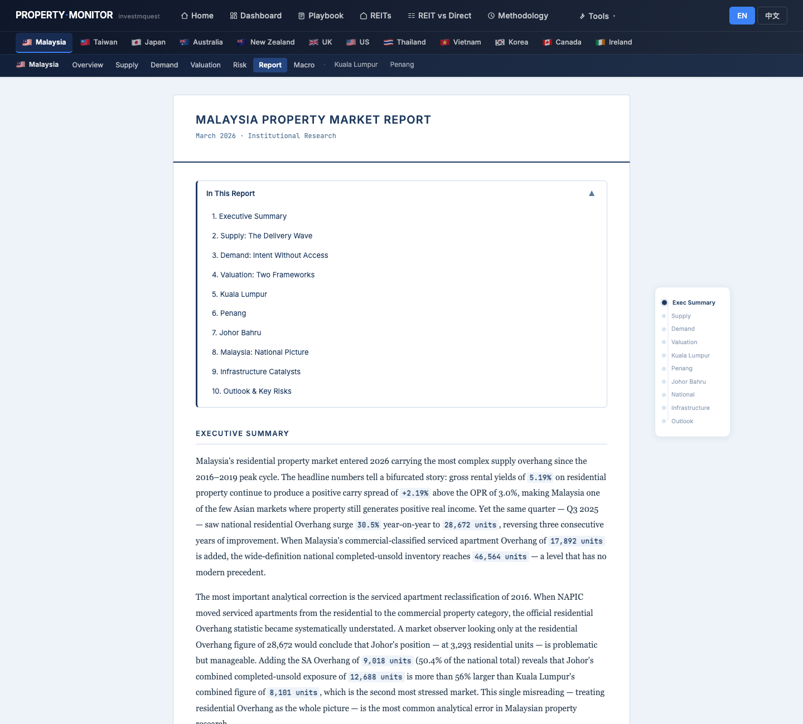
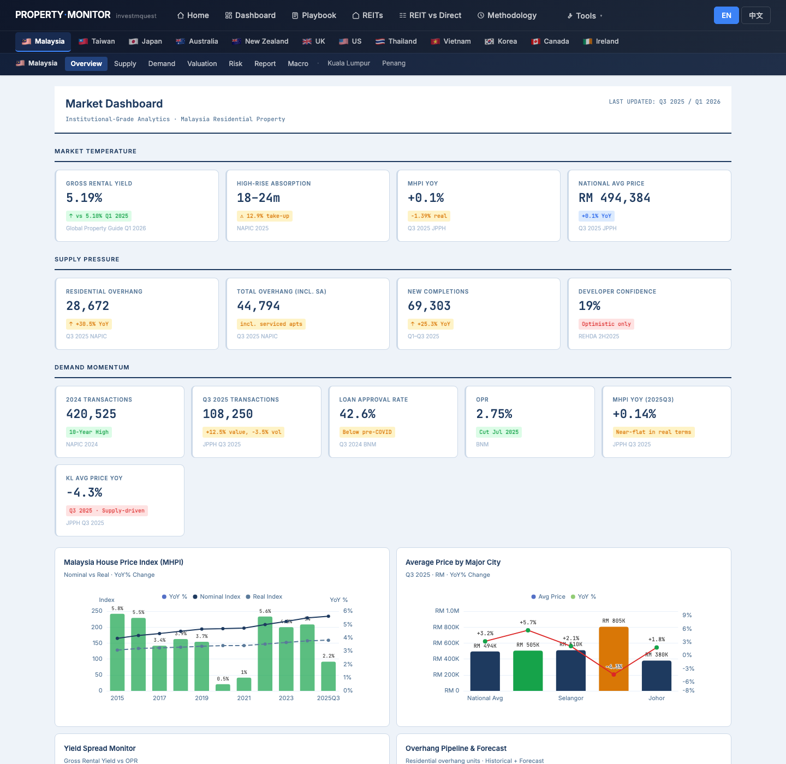
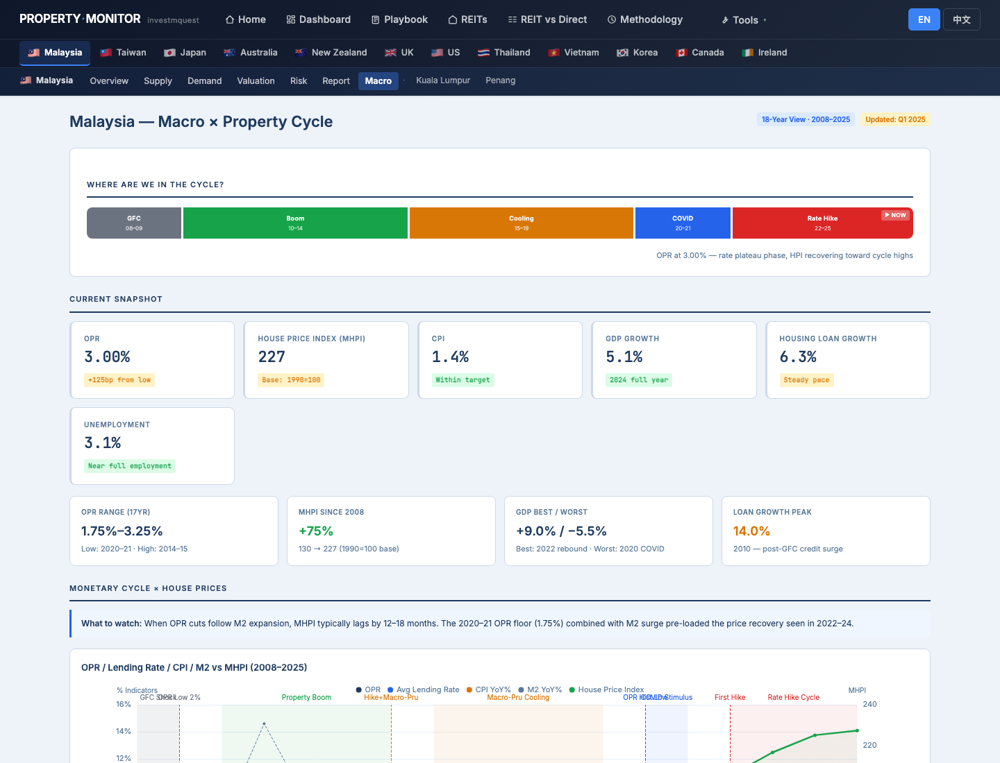
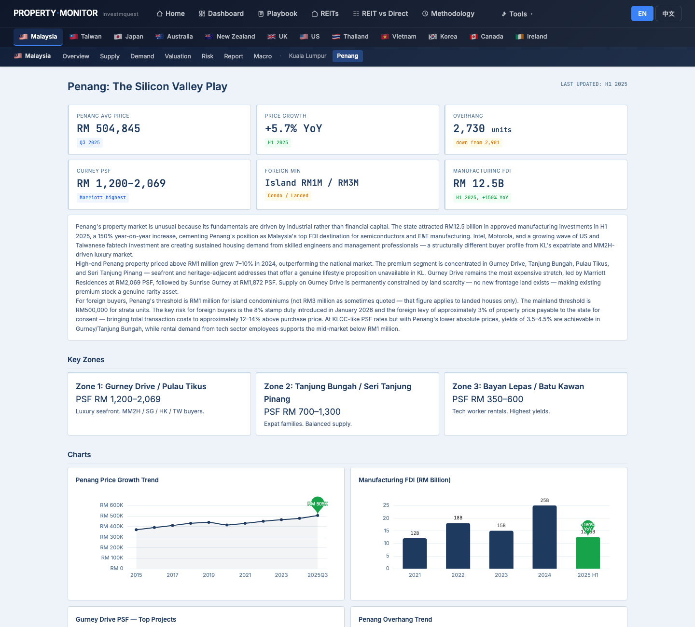
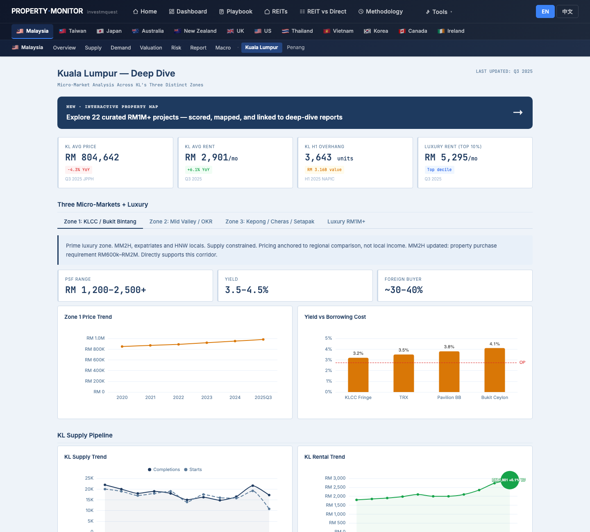
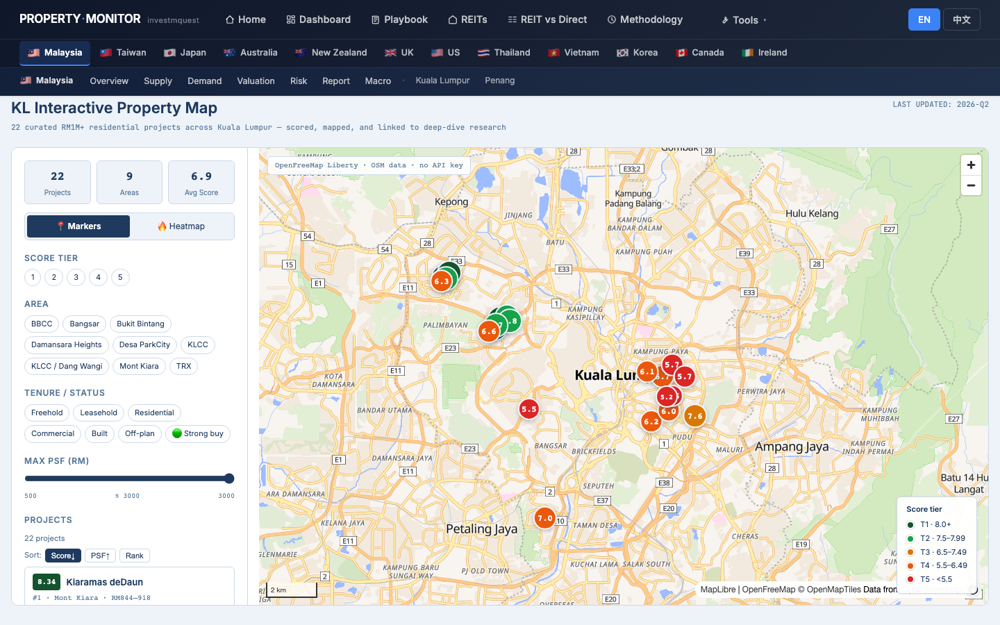
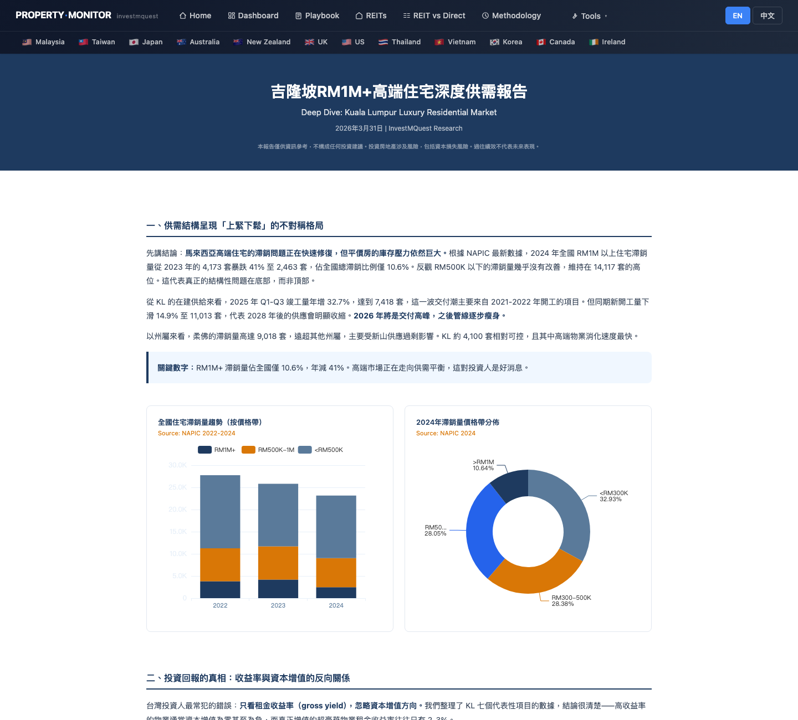
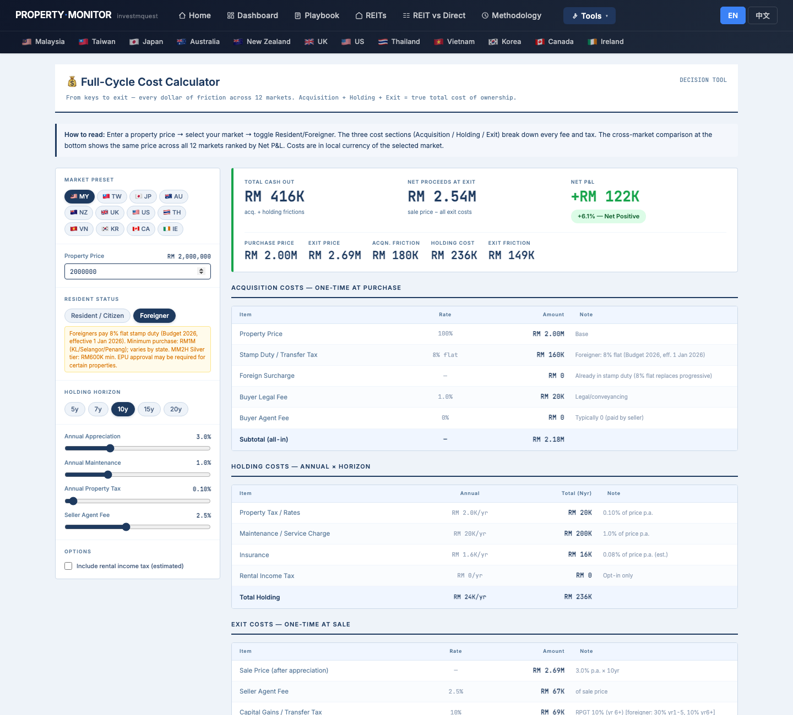
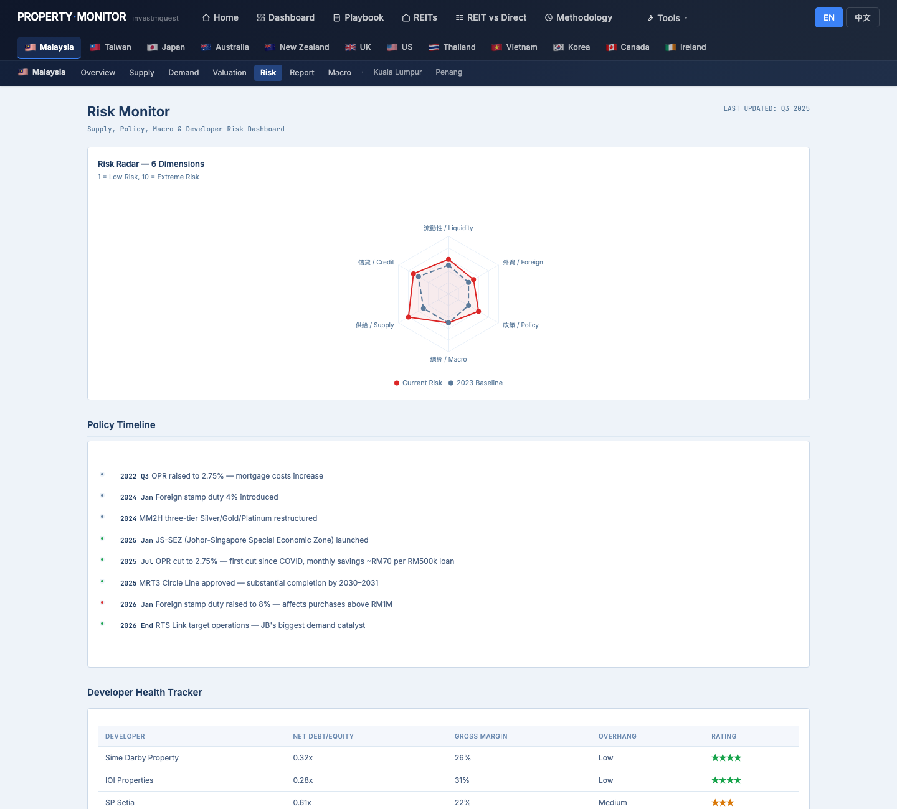

Mr. & Mrs. Chen (both 58, retired tech executives from Hsinchu) just received their MM2H approval and have RM 2M in cash to deploy on one property they will live in part-time and rent out when they're back in Taiwan. They've never used Property Monitor. This walkthrough shows you which page to open first, what to click, what each chart means, and where to find each function — using the Chens' questions as the lens. It is not investment advice, tax advice, MM2H legal advice, or property recommendations. 陳先生夫婦，皆 58 歲，新竹退休科技主管，剛取得 MM2H 核發，手上 RM 2M 現金預計買一戶，部分時間自住、人在台灣時出租。他們從沒用過 Property Monitor。這份導覽用陳氏夫婦的問題當主軸，告訴你先打開哪一頁、點哪裡、每張圖代表什麼、各種功能藏在哪。本文不是投資建議、稅務建議、MM2H 法律建議或不動產推薦。
- Where on this site does Malaysia data live, and how do I get there?馬來西亞的資料藏在哪？怎麼進去？
- Where can I read the analyst narrative — what's the story behind the numbers — before I start clicking charts?在開始點圖之前，哪裡能讀到分析師的敘述、看「數字背後的故事」？
- KL or Penang — how do I tell which one fits a retired couple who want to live + rent?吉隆坡 vs 檳城 — 兩個適合自住 + 出租的退休夫妻怎麼選？
- Which specific buildings (out of dozens) suit the RM 2M MM2H tier?幾十個建案中，哪些具體建案符合 RM 2M MM2H 等級？
- What does RM 2M actually cost end-to-end after the 2026 stamp duty change?2026 印花稅調漲後，RM 2M 含取得、持有、退場的實際總成本是多少？
- Where is the tool that compares buying property vs buying MY-REITs as a foreigner?外國人買實體 vs 買 MY-REIT 對照的工具在哪？
- How do I switch the site to 中文? Where do I download a PDF?怎麼切到中文？怎麼下載 PDF？
The Chens' click-by-click tour — 12 stops陳氏夫婦的逐步點擊旅程 — 12 個停靠點
Each stop is a real page on the site. For each, you'll see what they click, what the screen shows, and how that screen relates to their MM2H situation. Follow along in another tab — every URL works. 每個停靠點都是站上的一頁實際畫面。每站告訴你他們點什麼、螢幕出現什麼、這個畫面跟他們 MM2H 情境有什麼關係。建議另開分頁跟著走 — 所有連結都能直接點。
Land on the home page and pick the "passport" persona進入首頁，選「身分」persona 卡
What they see: the chosen card lights up amber with a checkmark. The persona explicitly lists "UAE, Turkey, Malaysia, Indonesia routes" — Malaysia is in scope. Below the hero, the scatter chart and world map both highlight visa-linked countries automatically. 螢幕出現什麼：選中的卡片變琥珀色亮起並打勾。persona 直接列「UAE、土耳其、馬來西亞、印尼路徑」 — 馬來西亞在範圍內。Hero 下方的散點圖與世界地圖會自動高亮簽證連結國家。

Use the world map to locate Malaysia用世界地圖找到馬來西亞
What they see: dot color depth = how extreme the metric. Top 5 strip below the map ranks leading cities for the chosen metric, with a ★ next to ones matching the passport persona. 螢幕出現什麼：點顏色深度代表該指標極端度。地圖下方 Top 5 列表顯示當前指標的領先城市，符合身分 persona 的旁邊有 ★。

Read the long-form Malaysia market report first — get the narrative before the numbers先讀馬來西亞長篇市場報告 — 看完故事再看數字
What they see: a long-form analyst report — paragraphs of narrative with stats embedded in the text. No charts to interpret here, just prose. This is the only page on the site that connects all the data points into "what's the story." 螢幕出現什麼：長篇分析師報告 — 段落敘述配內嵌統計數字。沒有圖表要解讀，純散文。這是站上唯一把所有資料點串成「故事是什麼」的地方。

Read the Malaysia dashboard — three KPI rows tell the whole market story讀馬來西亞儀表板 — 三排 KPI 把整個市場說完
What they see:
螢幕出現什麼：
① MARKET TEMPERATURE — gross rental yield, high-rise absorption, MHPI YoY, national avg price.
② SUPPLY PRESSURE — residential overhang, total overhang (incl. serviced apts), new completions, developer confidence. Most cards are orange/red here — that's the signal that supply is elevated.
③ DEMAND MOMENTUM — 2024 transactions (10-year high), Q3 2025 transactions, loan approval rate, OPR (cut to 2.75% Jul 2025), MHPI YoY, KL avg price (−4.3% YoY, red).
Below the KPIs: 6 ECharts charts including City Avg Price (KL/Penang/Selangor/Johor/National) and Rental Yield by City Q1 2026.
① 市場溫度 — 毛租金收益率、高層去化、MHPI YoY、全國均價。
② 供給壓力 — 住宅滯銷量、總滯銷（含 SA）、新完工量、開發商信心。這排大半卡片是橘／紅 — 信號是供給偏高。
③ 需求動能 — 2024 全年交易（10 年新高）、Q3 2025 交易、貸款核准率、OPR（2025/7 降至 2.75%）、MHPI YoY、KL 均價（−4.3% YoY，紅）。
KPI 下方有 6 張 ECharts，包括《各城市均價》與《Q1 2026 各城市 yield》。

Open Macro × Cycle — see "where in the cycle are we now"開 Macro × Cycle 頁，看「現在在週期哪個位置」
What they see: below the cycle bar, 6 macro KPI cards (OPR, MHPI, CPI, GDP, Housing Loan Growth, Unemployment). Then 4 historical context cards. Then two multi-axis line charts (monetary cycle vs MHPI, real economy vs MHPI). Finally a vertical Key Cycle Events timeline ending with "2025 Jul: OPR cut to 2.75% — monthly savings ~RM70 per RM500K loan" and "2025–2026: Johor SEZ + MRT3 + RTS Link". 螢幕出現什麼：週期軸下方 6 張 macro KPI 卡（OPR、MHPI、CPI、GDP、房貸增速、失業率）。然後 4 張歷史脈絡卡。再來兩張雙軸折線圖（貨幣週期 vs MHPI、實體經濟 vs MHPI）。最後是垂直關鍵事件時間軸，結尾是 「2025/7：OPR 降至 2.75% — 每 RM500K 貸款月省約 RM70」 與 「2025–2026：柔佛 SEZ + MRT3 + RTS Link」。

Open /my/penang to consider Penang as the alternative — and decide打開 /my/penang 考慮檳城為替代方案 — 然後做決定
What they see side-by-side:
三層級並排比較：
▸ Penang — RM 504K avg price (lower entry), +5.7% YoY (growing), Gurney PSF RM 1,200–2,069, RM1M foreign min (island condos), industrial FDI +150% YoY (Intel, Motorola tech worker rentals). Strength: lower PSF + lifestyle.
▸ KL — RM 805K avg price (higher), −4.3% YoY (correction), Zone 1 KLCC PSF RM 1,200–2,500+, deep MM2H buyer ecosystem, MRT3 + TRX + Bandar Malaysia catalysts. Strength: liquidity + expat ecosystem + growth catalysts.
▸ 檳城 — 均價 RM 504K（進入門檻低）、+5.7% YoY（成長中）、Gurney PSF RM 1,200–2,069、外國人下限 RM1M（島上公寓）、製造業 FDI +150% YoY（Intel、Motorola 工程師租屋需求）。強項：較低 PSF + 生活品質。
▸ 吉隆坡 — 均價 RM 805K（較高）、−4.3% YoY（修正中）、Zone 1 KLCC PSF RM 1,200–2,500+、MM2H 買家生態深、MRT3 + TRX + Bandar Malaysia 催化劑。強項：流動性 + 國際生態 + 成長催化劑。

Drill into KL — find the right zone (out of 3) for an MM2H Live + Rent buyer鑽進吉隆坡 — 在 3 個 zone 中找到適合 MM2H 自住 + 出租的
What they see in each tab: Zone 1 = ultra-luxury (PSF RM 1,200–2,500+, yield 3.5–4.5%, foreign 30–40%); Zone 2 = sweet spot (PSF RM 500–900, yield 5–6%, balanced supply); Zone 3 = overhang trap (red badges, ~40% of KL overhang). The Luxury RM1M+ tab has 4 dedicated KPIs and a long-form analyst card discussing 2025 correction window for branded residences (Pavilion BB, Alila 2 Bangsar, etc.). Plus a CTA banner pointing to kl-map.html with "22 curated RM1M+ projects" — the Chens click this in the next stop. 每個 tab 看到什麼：Zone 1 = 超豪宅（PSF RM 1,200–2,500+、yield 3.5–4.5%、外資佔 30–40%）；Zone 2 = 甜蜜點（PSF RM 500–900、yield 5–6%、供需平衡）；Zone 3 = 滯銷陷阱（紅標、佔 KL 滯銷 ~40%）。Luxury RM1M+ tab 有 4 張專屬 KPI 與長篇分析師卡片（討論 2025 高端品牌住宅修正期，Pavilion BB、Alila 2 Bangsar 等）。並有 CTA banner 連到 kl-map.html「22 個策展 RM1M+ 建案」 — 下一站陳氏夫婦會點。

Interactive Map — filter 22 scored RM1M+ projects to a shortlist互動地圖 — 從 22 個評分 RM1M+ 建案篩出口袋名單
What they see: a MapLibre map with colored markers (T1 dark green → T5 red). Each popup shows project name, developer + area, score (rank), tenure (Freehold / Leasehold), PSF, status, recommendation pill (🟢 積極 strong buy / 🟡 觀望 wait / 🔴 避開 avoid), 2–3 sentence rationale, and a "View full report →" link to the project's deep-dive HTML. 螢幕出現什麼：MapLibre 地圖 + 彩色標記（T1 深綠 → T5 紅）。每個 popup 顯示建案名、開發商 + 區、分數（排名）、tenure（永久 / 租賃）、PSF、狀態、建議 pill（🟢 積極 / 🟡 觀望 / 🔴 避開）、2–3 句說明、以及 「View full report →」 連到該建案的深度 HTML。

Master DD report — read the 8-section RM1M+ deep dive主 DD 報告 — 讀 8 章節 RM1M+ 深度報告
What they see (8 sections):
螢幕出現什麼（8 章節）：
§1 Asymmetric supply (RM1M+ overhang collapsed 41%)
§2 The yield-vs-growth inversion (high-yield buildings have flat prices; low-yield buildings appreciate)
§3 Six-District Scorecard table — KLCC / Mont Kiara / Damansara Heights / Bangsar / TRX / Bukit Bintang SA, with PSF, gross yield, capital growth, MRT3 effect, suitable investor type
§4 Foreign cost framework — 8% stamp duty 2026 (this is the urgency)
§5 Three structural catalysts (MRT3 / TRX / Bandar Malaysia)
§6 Three investor archetypes — Income / Growth / Wealth Allocation, each with target buildings, budget, hold period
§7 Conclusion (5-year minimum hold due to 30% RPGT for foreigners)
§8 Appendix charts (8 charts including stamp duty 2025-vs-2026 bar)
§1 不對稱供需（RM1M+ 滯銷 41% 暴跌）
§2 收益率與資本增值的反向關係（高 yield 建案價格平、低 yield 建案漲）
§3 六大地段評分表 — KLCC / Mont Kiara / Damansara Heights / Bangsar / TRX / Bukit Bintang SA，含 PSF、毛利、資本增值、MRT3 效應、適合投資者類型
§4 外國人成本框架 — 2026 印花稅 8%（這是急迫性）
§5 三大結構催化（MRT3 / TRX / Bandar Malaysia）
§6 三種投資者畫像 — 收租型／增值型／資產配置型，各附目標建案、預算、持有期
§7 結論（外國人 5 年最短持有期，因 RPGT 30%）
§8 附錄圖表（8 張，含 2025 vs 2026 印花稅對比）

Cost Calculator — what does RM 2M actually cost over 10 years, end-to-end?Cost Calculator — RM 2M 含取得、持有、退場 10 年總成本是多少？
What they see: hero KPIs (TOTAL CASH OUT / NET PROCEEDS AT EXIT / NET P&L verdict) + 5 supporting stats. Three breakdown tables —
螢幕出現什麼：頂部 hero KPI（TOTAL CASH OUT／NET PROCEEDS AT EXIT／NET P&L 判決）+ 5 張輔助統計。三張明細表 —
① Acquisition — price, foreign-buyer stamp duty (8% from 2026 / 4% in 2025), buyer legal fee, agent fee.
② Holding — quit rent + assessment, maintenance, insurance, optional rental income tax.
③ Exit — seller agent fee, RPGT (30% if held <6yr for foreigners, 10% from year 6+).
Plus a stacked bar chart, an annual holding-cost line chart, and a 12-market comparison table at the bottom (MY row highlighted).
① Acquisition — 物業價、外國人印花稅（2026 起 8% / 2025 為 4%）、買方律師費、仲介費。
② Holding — quit rent + assessment、維護、保險、可選的房租所得稅。
③ Exit — 賣方仲介費、RPGT（外國人持有 < 6 年為 30%，第 6 年起 10%）。
另有堆疊長條圖、年度持有成本折線圖、最底 12 市場比較表（MY 列高亮）。

REIT vs Direct — does buying property still beat MY-REITs after the 2026 WHT change?REIT vs Direct — 2026 WHT 變動後，買實體仍勝過 MY-REIT 嗎？
What they see: the 7-row comparison table (US/SG/JP/AU/MY/UK/EU) — they read the MY row: Direct Income vs REIT Income, Direct Total vs REIT Total, Gap, Winner. The right-side context cards include "Foreign Mode Flips These" which explicitly flags "Malaysia REIT 30% (2026): LHDN PR 2/2026 raised non-resident individual REIT WHT from 10% → 30% — major shift" in red. The Treaty Relief card for Taiwan shows whether MY-TW DTA reduces this. 螢幕出現什麼：7 列比較表（美／新／日／澳／馬／英／歐） — 讀 MY 那一列：Direct Income vs REIT Income、Direct Total vs REIT Total、Gap、Winner。右側脈絡卡有 「Foreign Mode Flips These」 明確標示紅字 「馬來西亞 REIT 30%（2026 起）：LHDN PR 2/2026 將非居民個人 REIT 預扣從 10% → 30%，重大變動」。Treaty Relief（台灣）卡會顯示 MY-TW DTA 是否減免此稅。

Risk Monitor + Methodology — confirm the 2026 deadline and verify data sourcesRisk Monitor + Methodology — 確認 2026 期限與驗證資料來源
What they see on Risk: the policy timeline ends with "2026 Jan: foreign stamp duty raised to 8% — affects purchases above RM1M" (red marker). Earlier markers include "2025 Jul: OPR cut to 2.75%" (green) and "2024: MM2H restructured Silver/Gold/Platinum" (neutral). The Risk Radar shows Supply at 8/10 (highest) and Policy at 6/10 (rising vs 2023's 4). Developer table lets them avoid stocks/properties from UEM Sunrise (⭐⭐ rating).
On Methodology: the Malaysia row in the 20-market source table shows: Price Index = NAPIC HPI · Rent / Vacancy = iProperty · Pipeline / Supply = NAPIC overhang · Central Bank = BNM OPR.
Risk 頁出現什麼：政策時間軸最後是 「2026 年 1 月：外國人印花稅升至 8% — 影響 RM1M 以上購買」（紅標）。較早的標記包括「2025/7：OPR 降至 2.75%」（綠）與「2024：MM2H 重整為 Silver / Gold / Platinum」（中性）。Risk Radar 顯示供給 8/10（最高）、政策 6/10（vs 2023 的 4 上升）。Developer 表讓他們避開 UEM Sunrise（⭐⭐ 評等）的標的。
Methodology：20 市場來源表中，馬來西亞列：Price Index = NAPIC HPI · Rent / Vacancy = iProperty · Pipeline / Supply = NAPIC overhang · Central Bank = BNM OPR。

Site cheat sheet — the 6 site-wide patterns the Chens need to know網站小抄 — 陳氏夫婦要記得的 6 個全站通用規則
These work the same way on every page across all markets — learn once, use everywhere.以下規則每一頁、每個市場都一致 — 學一次，整站通用。
Language toggle語言切換
Top-right of every page: two pill buttons EN / 中文. Choice is remembered across pages and visits via localStorage.每頁右上角：兩顆膠囊鈕 EN / 中文。選擇會用 localStorage 跨頁、跨次造訪記住。
Tip: switch to 中文 first, then download PDF — the PDF will be in 中文.小技巧：先切到中文再下載 PDF，PDF 就會是中文版。
Market selector市場選擇
Navbar second row: a country flag for each market. Hover any flag to see a dropdown with Overview / Supply / Demand / Valuation / Risk / Report / Macro plus city sub-pages.Navbar 第二列：每個市場一面國旗。游標停留在任一面旗上 → 跳出下拉，包含 Overview / Supply / Demand / Valuation / Risk / Report / Macro 與各城市子頁。
The Chens use 🇲🇾 → Kuala Lumpur or Penang to jump straight to city detail.陳氏夫婦用 🇲🇾 → Kuala Lumpur 或 Penang 直接跳到城市深度頁。
Tools dropdownTools 下拉選單
All cross-market analytical tools live here: Home, Dashboard, Playbook, REITs, REIT vs Direct, Carry Heatmap, Pipeline Cliff, Cost Calculator, Methodology, plus the DD library.所有跨市場分析工具都在這裡：Home、Dashboard、Playbook、REITs、REIT vs Direct、Carry Heatmap、Pipeline Cliff、Cost Calculator、Methodology 與 DD library。
If a tool isn't market-specific, it's in here.如果某個工具不是特定市場專屬的，就在這裡。
KPI card colorsKPI 卡顏色
Left border color tells you the read at a glance.左邊框顏色一眼告訴你判讀。
Interactive maps + DD library互動地圖 + DD library
/my/kl-map — 22 RM1M+ projects scored, mapped, with full DD reports linked. /docs/dd/index.html — searchable library of all building DDs (filter by market / area / status / yield)./my/kl-map — 22 個 RM1M+ 建案附評分、地圖、連到完整 DD 報告。/docs/dd/index.html — 所有建案 DD 的可搜尋資料庫（依市場／區／狀態／yield 篩選）。
Most decision-dense pages on the site for MY buyers.對 MY 買家而言，這兩頁是站上資訊密度最高的決策工具。
Save any page as PDF把任何頁面存成 PDF
Press ⌘ + P (Mac) or Ctrl + P (Windows) → choose "Save as PDF". The print stylesheet hides the navbar so the PDF looks clean.按 ⌘ + P（Mac）或 Ctrl + P（Windows）→ 選「另存為 PDF」。印刷樣式表會自動隱藏 navbar，PDF 版面乾淨。
This walkthrough has a dedicated "Download PDF" button at the bottom.本導覽底部有專屬「下載 PDF」按鈕。
What the Chens walk away with — and what they must take outside this site陳氏夫婦帶走什麼 — 以及哪些必須拿到站外去問
After the 12-stop tour, they have a clear separation between "questions the site answered" and "questions the site flagged but cannot answer."走完 12 站後，他們能清楚分開「網站已回答的問題」與「網站幫他們點出但不能回答的問題」。
✓ The site answered these for them✓ 網站已回答的
- Where Malaysia data lives and how to navigate from /home → /my/ → /my/kl + /my/penang馬來西亞資料在哪、怎麼從 /home → /my/ → /my/kl + /my/penang 一路鑽進去
- The full market narrative in plain prose before they open any chart (the long-form report on /my/report)用白話文寫的完整市場敘述，在他們打開任何圖之前先讀（/my/report 的長篇報告）
- Why KL beats Penang for their profile — deeper expat ecosystem, MRT3 / TRX / Bandar Malaysia catalysts (the call hidden in city summary cards)為什麼吉隆坡比檳城適合他們 — 國際生態深、MRT3 / TRX / Bandar Malaysia 催化劑（藏在城市 summary 卡裡的判斷）
- Which KL zone (out of 3) fits RM 2M Live + Rent — Zone 2 sweet spot (Mont Kiara / Bangsar) over Zone 1 KLCC ultra-luxury or Zone 3 overhang trapRM 2M 自住 + 出租落在哪個 KL zone（共 3 個） — Zone 2 甜蜜點（Mont Kiara / Bangsar）勝過 Zone 1 KLCC 超豪宅或 Zone 3 滯銷區
- Which specific buildings to shortlist — filterable by score / area / status / recommendation on /my/kl-map (22 curated RM1M+ projects)口袋名單要哪些具體建案 — 在 /my/kl-map 上可依分數／區／狀態／建議篩選（22 個策展 RM1M+ 建案）
- Their investor archetype — Income-Focused per the master DD, with a 5–7 yr hold, RM1M–1.5M Mont Kiara / Bangsar target他們的投資者畫像 — 主 DD 認定為收租型，5–7 年持有，RM1M–1.5M Mont Kiara / Bangsar 目標
- What RM 2M actually costs over 10 years with MY foreign tax brackets baked in — including the 8% stamp duty 2026 hit (Cost Calculator)RM 2M 在 10 年週期內的真實總成本，MY 外國人稅率已內建公式 — 含 2026 印花稅 8% 衝擊（Cost Calculator）
- Why direct property still beats MY-REIT after 2026 WHT change (REIT vs Direct, Foreign + TW mode)2026 WHT 變動後實體仍勝 MY-REIT（REIT vs Direct, Foreign + TW 模式）
- The 2026 Jan deadline urgency — explicit red marker on /my/risk timeline, costing ~RM 80K extra stamp duty if they miss it2026 年 1 月期限急迫性 — /my/risk 時間軸上明確紅標，錯過約多付 RM 80K 印花稅
- Where every number comes from (Methodology page Malaysia row: NAPIC, JPPH, BNM, iProperty)每個數字的來源（Methodology 頁馬來西亞列：NAPIC、JPPH、BNM、iProperty）
→ Questions for advisors outside this site→ 必須拿到站外問專業人士的
- MM2H deposit lock-up planning (RM 600K–2M deposit per tier) and renewal documentation → MM2H-licensed agent + tax plannerMM2H 定存規劃（依 tier RM 600K–2M）與更新文件 → MM2H 持照仲介 + 稅務規劃師
- Tax filing in Taiwan + Malaysia, foreign tax credit / DTA application, rental income reporting → Taiwan 會計師 + Malaysia 稅務代理台灣 + 馬來西亞稅務申報、扣抵 / DTA 適用、租金收入申報 → 台灣會計師 + 馬來西亞稅務代理
- State Authority Consent for foreign purchase (mandatory for foreigners, takes weeks to months) → Malaysian conveyancing lawyer外國人購買的州政府同意書（外國人必備，數週到數月） → 馬來西亞過戶律師
- Loan eligibility (if not paying full cash) — most banks restrict foreign LTV; MM2H holders get better terms but still capped → Maybank / CIMB / Hong Leong loan officers房貸資格（如非全現金） — 多數銀行限制外國人 LTV；MM2H 持有人條件較好但仍有上限 → Maybank / CIMB / Hong Leong 房貸專員
- Property management contract (English-capable PM is non-negotiable when they're back in Taiwan) → local PM company in KL or Penang物業管理合約（人在台灣時，英語溝通的 PM 不可妥協） → 吉隆坡或檳城當地 PM 公司
- FX hedging on the MYR-TWD entry and exit, rental income remittance — MYR has been volatile vs USD/TWD → bank FX deskMYR-TWD 進出場避險、租金匯回 — MYR 對美元／台幣波動 → 往來銀行 FX 部門
The site's best-supported call for the Chens站上資料能支持的最佳選項 — 給 Chen 夫婦
Not a personalized recommendation — a single, opinionated call assembled only from data this site already shows in SECTIONS 01–04.非個人化推薦 — 是從 SECTION 01–04 站上資料推導出的單一明確建議。
✓ Pre-commit checklist (from site data)✓ 進場前 checklist（站上資料能驗證的）
- Pipeline Cliff status for KL Mont Kiara / Bangsar must read EASING or WATCH; NAPIC overhang for the submarket within acceptable band.KL Mont Kiara / Bangsar 的 Pipeline Cliff 必須是 EASING 或 WATCH；NAPIC overhang 在可接受區間。
/my/Cost Calculator 10-year total (foreign buyer rates + RPGT) clears post-tax hurdle./my/Cost Calculator 10 年總成本（外籍買家稅率 + RPGT）通過稅後門檻。- MM2H eligibility re-check: RM 1M FD + RM 40K monthly income proof still satisfied after this asset deployment.MM2H 條件再確認：資產配置後 RM 1M FD + RM 40K 月收證明仍滿足。
/my/demand.html: Mont Kiara / Bangsar absorption rate not in DANGER tier./my/demand.html：Mont Kiara / Bangsar 去化率不在 DANGER 等級。- Methodology page Malaysia row: every figure used in offer letter sourced from NAPIC / JPPH / BNM, not crowdsourced.Methodology 頁馬來西亞那列：出價文件每個數字都來自 NAPIC / JPPH / BNM 官方。
→ Off-site next steps (the site cannot answer)→ 走出站外的下一步（站上無法回答的）
- Licensed MM2H agent — application + renewal pathway, 2024 revamp tier choice (Silver / Gold / Platinum).持牌 MM2H 仲介 — 申請+續簽路徑、2024 改版後的層級選擇（Silver / Gold / Platinum）。
- Malaysian tax consultant + Taiwan 會計師 — RPGT, double tax treaty (MY-TW), inheritance position for the couple.馬來西亞稅務顧問 + 台灣會計師 — RPGT、MY-TW 雙邊稅務協定、夫婦相續曝險。
- Malaysian mortgage broker — foreign-buyer mortgage typically 50–70% LTV, rate 4.5–6%; lock terms before offer.馬來西亞房貸經紀 — 外籍買家房貸一般 LTV 50-70%、利率 4.5-6%；出價前先 lock。
- Peguam (Malaysian lawyer) — title transfer, foreign-buyer restriction (Selangor minimum threshold RM 2M, KL different).馬來西亞律師 (Peguam) — 過戶、外籍買家限制（Selangor 最低門檻 RM 2M，KL 不同）。
- Building inspector + HOA records review — sinking fund, maintenance fee history, JMB / MC governance.建物檢查 + 管委會檔案 review — sinking fund、管理費歷史、JMB / MC 運作。
A 3-bed self-occupied condo in KL Mont Kiara / Bangsar South is the single call most consistent with what the site shows about supply, demand, and yield for MM2H foreign buyers. Penang as a second home is a nice-to-have, not the core decision.KL Mont Kiara / Bangsar South 的 3-bed 自住公寓是站上對 MM2H 外國買家供需與 yield 資料能支持的最一致選項。Penang second home 是 nice-to-have，不是核心。